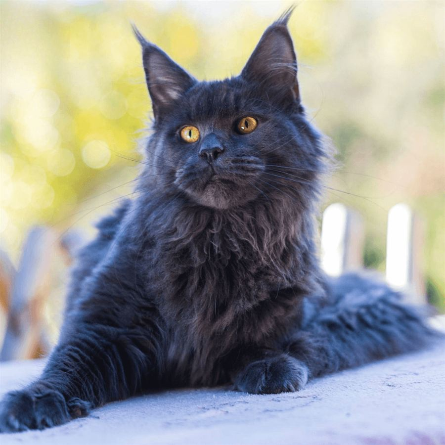

Aïko
Saillie — 400 €- Couleur
- Bleu
- Lignée
- Européenne
- Date de naissance
- 9 avril 2025
- Titre
- Résultats d'exposition : Excellent
« Un caractère doux, équilibré et très affectueux. »
Père : Unilab des Phoenix Coon
Mère : Utah des Chats du Causse